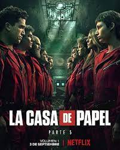

Un professor i la seva banda de lladres amb noms en clau planegen i executan atracaments elaborats a la Fàbrica Nacional de Moneda i Timbre d'Espanya, tot mentre prenen rehenes.
Categoria: Acció, Drama
Any i duració: 2017-2021, 5 temporades (aproximadament 50 minuts per episodi)